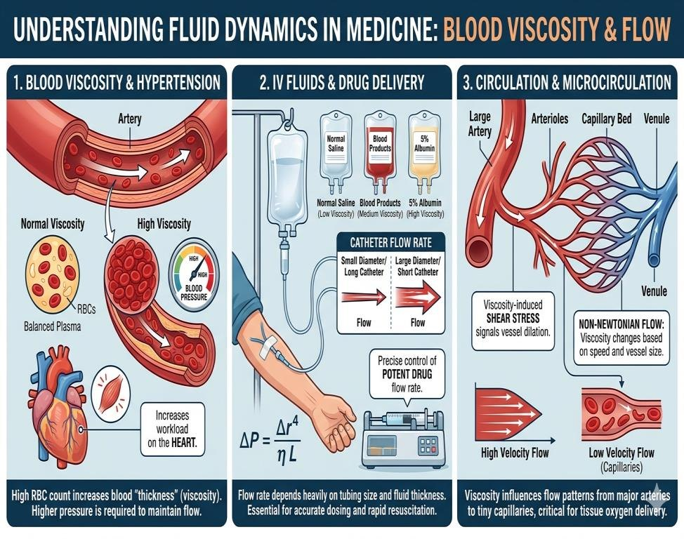

Temperature
Heating a liquid lowers its viscosity sharply: glycerin at 40 °C is about five times "thinner" than at 20 °C. Record the room temperature during the lab.
This lesson is an AI-assisted, low-friction introduction. It is not scientific-grade material; its purpose is to build a working framework before the lecture and the lab session.
Physics lab 5 · Falling-ball viscometer
To determine the coefficient of viscosity of glycerin by Stokes' method.
The lab manual spells it "Stock's"; the method is named after George Stokes.
By the end of this session, students should be able to:
Viscosity is a liquid's internal friction: its resistance to flowing. When a liquid flows, neighbouring layers slide over each other, and each layer drags on the next. Honey and glycerin resist this sliding strongly; water hardly at all.
The coefficient of viscosity η (eta) is the tangential force per unit area needed to keep a unit velocity gradient between layers:
F = η A (dv / dx)
CGS unit: poise (P) = g cm⁻¹ s⁻¹.
SI unit: Pa·s. 1 poise = 0.1 Pa·s.
The temperature slider changes water, glycerin and honey; the fourth tube follows its own viscosity slider. Densities in g/cm³.
Heating a liquid lowers its viscosity sharply: glycerin at 40 °C is about five times "thinner" than at 20 °C. Record the room temperature during the lab.
Water ≈ 0.01 P, blood ≈ 0.03–0.04 P, glycerin several poise, honey around 100 P. Stronger forces between molecules mean more internal friction.
Terminal velocity grows with r², not r. Doubling the radius makes the ball fall four times faster in the same liquid.
The ball sinks because (ρs − ρL) is positive. A heavier steel ball falls faster than glass; a ball lighter than the liquid would float.
Blood, plasma, IV fluids and many injectable drugs are liquids whose flow is governed by viscosity. Poiseuille's law shows how strongly it matters: the resistance of a vessel or a tube is R = 8ηL / πr⁴, directly proportional to η.
Blood is about 3–4 times as viscous as water, mostly because of its red cells (haematocrit). In conditions such as polycythaemia or dehydration the blood thickens; the heart must push harder to keep the same flow, which raises blood pressure and its workload.
A thicker fluid flows more slowly through the same cannula: blood products and albumin run slower than saline. Flow rates, cannula size and the force needed to push a viscous drug through a syringe all depend on η, which is why infusion pumps are set carefully.
Blood flows in smooth layers (laminar flow): fastest in the centre of a vessel, slowest at the wall. Blood is non-Newtonian: its effective viscosity changes with flow speed and vessel size, so it behaves differently in arteries than in tiny capillaries.

Apparatus: a tall glass cylinder of glycerin, 3–4 steel spheres, a micrometer, a metre rule, a marker and a stopwatch.
g = 9.8 m/s² × 100 cm/m = 980 cm/s²
Every other quantity is in centimetres, grams and seconds: densities in g/cm³, the slope in cm⁻¹ s⁻¹, and the answer in poise (g cm⁻¹ s⁻¹), a CGS unit. So g must be in cm/s² too.
Using 9.8 instead gives η = 0.12 P: an answer 100 times too small.
Unit check: (g/cm³)(cm/s²) ÷ (cm⁻¹ s⁻¹) = g cm⁻¹ s⁻¹ = poise ✓
Example readings for three steel spheres, used as the worked example.
| Ball no. | rcm | r²cm² | ts | v = D/tcm/s |
|---|---|---|---|---|
| 1 | 0.20 | 0.04 | 6.26 | 4.79 |
| 2 | 0.25 | 0.0625 | 4.01 | 7.48 |
| 3 | 0.30 | 0.09 | 2.78 | 10.79 |
Example for ball 3: v = 30.0 / 2.78 = 10.79 cm/s. The slope below uses balls 1 and 3, the two points farthest apart.
Writing the slope as Δx/Δy, with the axes swapped, is an easy mistake. v is on the y-axis, so S = Δv / Δr², rise over run.
Putting in g = 9.8 gives 0.12 P, 100 times too small. With g = 980 cm/s² the example gives 11.98 P.
The micrometer gives the diameter. Halve it first: r = d/2, then square. Using d² makes every x value 4 times too big.
The slope belongs to the best straight line. When the points scatter, choose two points on the drawn line, far apart.
Mark X and Y on the cylinder. Drag a sphere from its dish and release it above the glycerin; lift it back out with the magnet. Then graph v against r² and find η.
Pick the marker and draw two lines across the tube.
| Ball | rcm | r²cm² | ts | v = D/tcm/s | Remove |
|---|---|---|---|---|---|
| No readings yet. | |||||
Plot at least two points, then choose two points on the line.